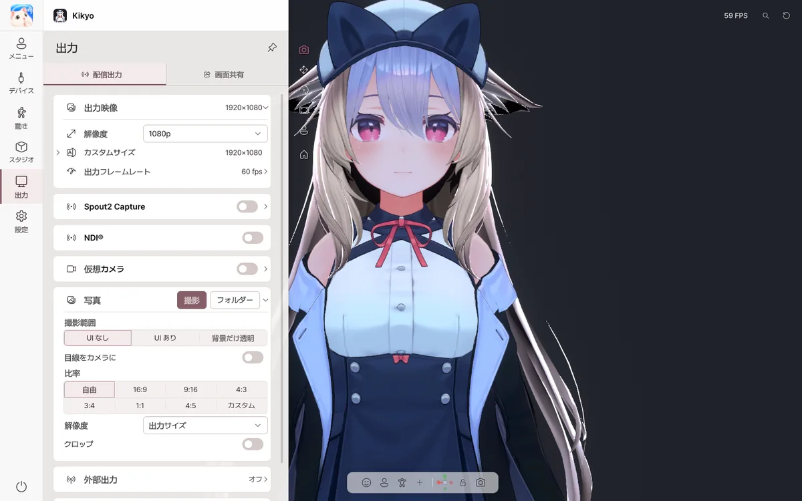
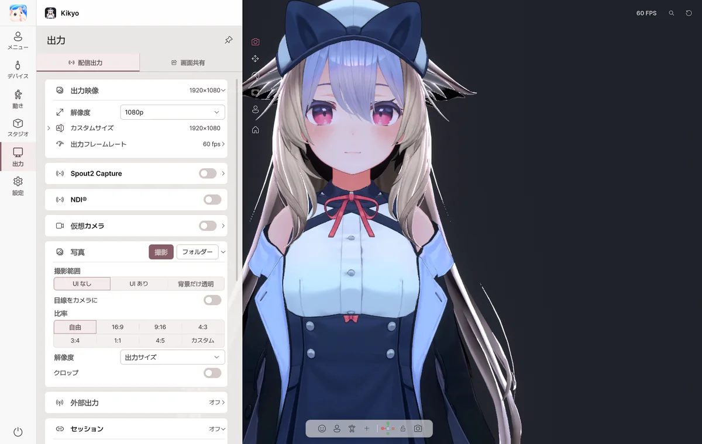
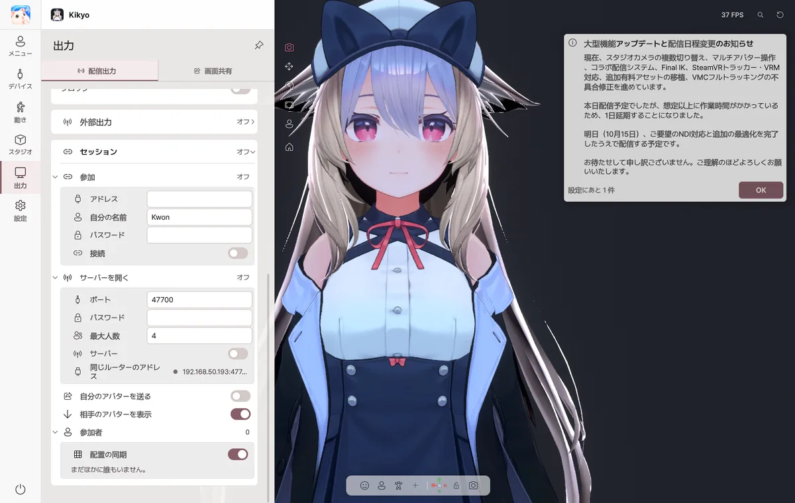
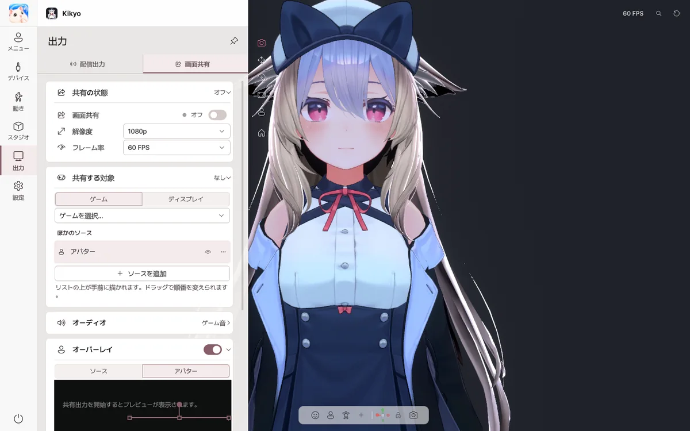
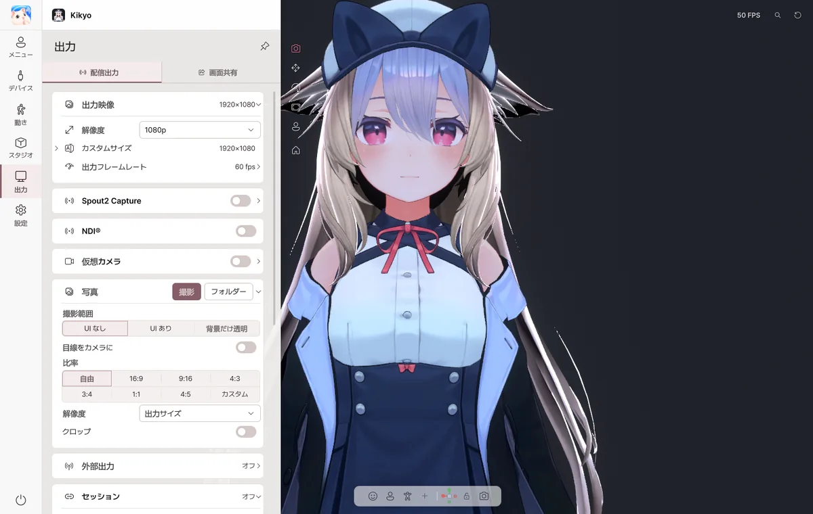
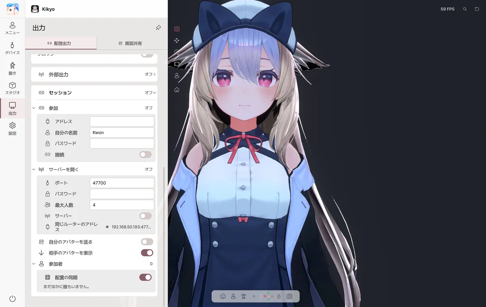

9. 出力：OBS・NDI・画面共有・リモートセッション
スタジオカメラが送出中でも Avatar Live のウィンドウは編集用シーンビューのままです。OBS に送られるのは選んだ配信用カメラの映像で、アプリの設定パネルではありません。透明背景の配信にはウィンドウキャプチャより Spout2 または NDIを推奨します。

| 目的 | 方法 | エディション |
|---|---|---|
| 同じ Windows PC の OBS へ透明アバターを送る | Spout2 | Basic / Pro |
| ネットワーク上の別 PC へ送る | NDI® | Basic / Pro |
| Discord・Zoom のカメラ一覧に出す | 仮想カメラ | Basic / Pro |
| ゲームとアバターを重ねて Discord で共有 | 画面共有 | Basic、一部の追加ソースは Pro |
| 複数のカメラを独立した OBS ソースとして送る | カメラ別 Spout2 | Pro、独立送信は最大 3 台 |
| 別 PC の参加者とアバター・動作を同期 | リモートセッション | Pro |
| 配信映像を MP4 で保存 | 録画 | Pro |
出力画質・解像度・FPS
- 解像度は OBS・NDI・Spout2 が受ける画面の画素数です。720p は軽量ですが輪郭が荒く、1080p は一般的な配信に適し、1440p/4K は細部が鮮明になる代わりに GPU・ネットワーク負荷が上がります。Basic は最大 1920×1080、Pro は最大 3840×2160。
- **フレームレート（FPS）**は１秒間に送る映像の枚数です。30 は負荷が軽く、60 は指・表情・カメラ移動が滑らかです。上限 60fps で、実際のアプリ FPS が足りなければ配信も遅くなります。
- 送出対象をシーンビューにすると自分がマウスで動かす視点も配信に反映されます。**スタジオカメラ (Pro)**を送出すれば編集中の視点とは独立して構図を維持できます。
- 透過背景を使う場合はスタジオの背景を透明にし、受信側のアルファ合成を有効にします。仮想カメラや普通のウィンドウキャプチャは同じ方法でアルファを送信しません。
Spout2 → 同じ PC の OBS

Avatar Live は Spout2 を送信しますが、OBS 側には別途 Spout2 受信プラグインが必要です。
- OBS を終了し、Off World Live 公式 Spout2 プラグインのリリースから Windows インストーラーをダウンロードします。プロジェクトのインストール手順に従い、対象 OBS の場所を確認します。
- OBS を起動し、ソース → + → Spout2 Captureが表示されるか確かめます。見つからない場合は OBS バージョン・インストール先を確認して OBS を再起動します。
- Avatar Live の出力 → 送出 → Spout2をオンにします。送信名の初期値は Avatar Live。変更したら適用します。
- OBS の Spout2 Capture で送信元 Avatar Live（または変更後の名前）を選び、OBS のシーン内で位置・大きさを調整します。
- 背景を透明にするには Avatar Live のスタジオ → 背景 → 透明と OBS 側の Composite with alpha などアルファ合成設定を確認します。編集画面が黒いだけであれば OBS で透明に表示されるか確かめてください。
送信名を変更した後は OBS 側でも新しい名前を選び直します。アルファ送信はアバターのみを重ねたい場合オンにしてください。Spout2 は基本的に同じ PC 内の送信方式です。別 PC の OBS で使う場合は下記 NDI を選びます。映像が重ければ FPS と解像度、不要な独立カメラを減らします。
**カメラ別 Spout2 (Pro)**はメイン配信とは別に最大 3 系統の独立映像を送ります。配信していないカメラの画面も OBS に追加できますが、映像ごとに描画コストが増えます。
第三者ソフトウェアのお知らせ： OBS Spout2 プラグインは Off World Live が配布する独立したソフトウェアで、Avatar Live には同梱されません。GPL v2 等の配布条件は提供元のものが適用されます。
NDI® → OBS・別 PC（Basic 対応）

NDI® 出力は Basic と Pro の両方で利用できます。 ネットワーク上の別 PC へ映像を送れるので、同じ PC 内で使う Spout2 と用途が異なります。ゲスト Wi-Fi の端末分離などがあると送信元を発見できないことがあります。
- Avatar Live で **出力 → 送出 → NDI®**をオンにします。送信名は Avatar Liveで、映像のサイズと FPS は出力画像の設定を使います。
- OBS を終了し、DistroAV（旧 OBS-NDI）公式リリースから OBS 用プラグインを入れます。指示がある場合は別途 NDI Runtime もインストールします。旧 OBS-NDI が残って競合する場合は案内に従って整理してください。
- OBS でソース → + → NDI Sourceを選び、送信元 Avatar Liveを選択します。プラグインのバージョンにより表示名が異なる場合があります。
- 送信元が出なければ両 PC のネットワーク接続、Windows ファイアウォール、NDI スイッチ、OBS プラグイン・Runtime を確認します。透過映像を使うには受信側のアルファ対応も必要です。
- OBS 以外で確認するには NDI Tools 公式サイトから Studio Monitor 等を自分でインストールします。NDI Tools は Avatar Live に同梱されません。
NDI のライセンス・商標・再配布に関する表示
- NDI® は Vizrt NDI AB の登録商標です。 公式案内は ndi.video をご確認ください。Avatar Live は NDI の公式製品や保証製品ではありません。
- Avatar Live は NDI SDK 6.3.2 の再配布ランタイムと Processing.NDI.Lib.Licenses.txt をアプリに同梱する設計です。SDK の使用・再配布は NDI SDK 公式ライセンスおよびアプリと共に提供されるライセンス全文に従います。
- NDI SDK・NDI Tools・DistroAV はそれぞれ別の配布物です。SDK のランタイムを同梱できる条件が NDI Tools の再配布を許可することにはなりません。受信アプリはそれぞれの配布元から取得してください。
- NDI の映像送信自体が後述のリモートセッションの暗号化を提供するわけではありません。信頼できるネットワークで使用してください。
仮想カメラ・写真
仮想カメラのインストールで Windows に Avatar Live Camera が登録され、Discord・Zoom・OBS のカメラ選択から選べます。管理者権限が必要になる場合があります。ボタンが動かないときはアプリの再起動や、インストールフォルダーの VirtualCamera/Install.bat を確認してください。登録後は仮想カメラをオンにします。Discord 等が新しいカメラを検出しない場合は完全終了して再起動します。
仮想カメラは最大 1920×1080／30fpsで、アルファ透過は送れません。写真は PNG で保存され、クロップ・縦横比・解像度の指定が保存範囲と画素数に影響します。透過背景の PNG にはアルファを保存できます。
Discord 画面共有・VB-CABLE

- 出力 → 画面共有でゲームまたはディスプレイを選びます。ゲームは起動中のウィンドウを選択します。
- アバターの位置と大きさを調整し、共有をオンにします。
- Discord の画面共有 → アプリケーションで Avatar Live Share Output を選びます。必要なら音声共有もオンにします。普通の Avatar Live ウィンドウそのものではありません。
- 画面が真っ黒ならゲームをボーダーレスウィンドウにしてください。ゲームのキャプチャが失敗してディスプレイキャプチャへ代替される場合は、そのモニター上の他のウィンドウも映る可能性があります。
追加ソース (Pro)は別の窓やモニターを重ねられます。音声はゲーム音声・デスクトップ・指定アプリのみ・なしから選びます。各アプリの音量 0–200%は共有する音声ミックスだけの値です。0 で無音、100% で元のレベル、200% で音割れの可能性があります。Windows の通常音量には影響しません。
別の仮想オーディオ出力がない場合は、ユーザーの同意と Windows 管理者承認で VB-Audio VB-CABLEをインストールする案内が出ます。製品：VB-Audio 公式。導入後もヘッドホンが通常の既定再生機器であることを確認してください。
VB-CABLE ライセンス表示： VB-CABLE は VB-Audio Software の Donationware です。使用が役立つ場合は寄付・条件に応じたライセンス料のお支払いをご検討ください。配布・ライセンス条件は VB-Audio のものが適用されます。Avatar Live が第三者のライセンスを付与するものではありません。
リモートセッション (Pro)：別の PC と一緒に配信

セッションは参加者の一人の PC がアプリ内サーバーを開く方式です。Avatar Live が管理する中央クラウドへデータを永続保存する方式ではありません。画面そのものではなく、姿勢・表情・指・視線・参加者状態と、別途同意したアバターデータを届け、各 PC でモデルを描画します。
同じルーターで接続する
- ホスト側は 出力 → 送出 → セッション → サーバーを開く を開きます。
- ポートは初期値 47700、最大人数はホストを含め初期値 4 人（2–16 人に設定可能）です。パスワードの設定を推奨します。
- サーバースイッチをオンにするとその PC がサーバーを開き、自分も参加します。アプリに表示される 同じルーターの IP（例 192.168.0.25:47700）を相手に伝えます。これは例の値なので自分の住所を使用します。
- 相手は 出力 → 送出 → セッション → 参加 にアドレス・自分の名前・パスワードを入力し 接続をオンにします。
- 退出は接続をオフ、全員の部屋を閉じるときはホストがサーバーをオフにします。
別の家から接続：ポート転送を詳しく設定
- ホスト PC の Windows ネットワーク設定で内部 IPv4（例 192.168.0.25）を調べます。変わる場合はルーターの DHCP アドレス予約で固定すると設定を維持できます。
- ルーター管理画面の ポート転送／仮想サーバーを開き、外部 TCP 47700 と UDP 47700 → ホスト PC の内部 IPv4、内部 47700 に設定します。TCP と UDP を分けて追加するルーターもあります。アプリで別のポートを選んだ場合は同じ番号に置き換えます。
- Windows セキュリティのファイアウォールでアプリを許可で Avatar Live を許可します。必要ならホスト PC の TCP/UDP 47700 の受信規則だけを追加してください。ファイアウォール全体を無効にしないでください。
- ルーターの WAN 側 IP を確認します。10.x、172.16–31.x、192.168.x、100.64–127.xならさらに上流にルーターや CGNAT があり、手元のルーターだけのポート転送では外から接続できない場合があります。ISP のグローバル IP 提供や上流ルーター設定が必要です。
- 相手に実際のグローバルIP:47700を伝えます。203.0.113.10:47700 は説明専用の架空例です。同じ Wi-Fi で自分のグローバル IP に接続する試験は NAT ループバック非対応で失敗するため、必ず別のネットワークから確認してください。
- 配信が終わったらサーバーと不要になったポート転送をオフにします。パスワードを SNS 等へ公開しないでください。
接続できないとき： サーバーオン → 双方 v2.0.0 → アドレス・パスワード → 同じ LAN なら接続できるか → Windows ファイアウォール → TCP/UDP 両方の転送 → 公開 WAN IP/CGNAT → 別回線で試験、の順で確認します。
配置、参加者、アバターデータ共有

- 相手のアバターを表示：自分の PC で相手のモデルを表示します。同じモデルがない、送信に同意していない場合は代替アバターを選べます。姿勢情報は表示可能なモデルに反映されます。
- 自分のアバターデータを送るは初期状態オフです。転送と一時保存への同意、衣装・モデル・小物などの利用規約で許可されていることを確認してからオンにしてください。再配布禁止の VRM は送信しません。
- 配置の同期（初期状態オン）はホストが決めた配置＋参加者自身の調整分を適用します。オフなら自分の画面に保存した配置を使います。相手のモデルを自分で移動・回転・拡大しても、必ずしも相手の PC の表示は変わりません。
- **位置のロック（ホスト）**は参加者が自分の位置・向き・大きさを変えるのを制限します。集合写真の整列に適しています。
- 参加者を見る／カメラを見るは対象名の意図を伝え、受信側の PC がその画面での参加者の顔、またはその PC 自身のカメラを見つけて視線を計算します。
- 同じライセンスで保有している VRM はライブラリの Vrm フォルダーへ配置し もう一度探すで使用できます。権利がないモデルは使用せず、許可された代替モデルを選びます。
データ保護・暗号化・利用規約
中央の Avatar Live サーバーにアバターを永続保存しません。ただしホスト PC と受信 PC にはセッション中、一時的な暗号化キャッシュが存在する場合があります。ホストが受信者へ転送するためにキャッシュを使用することもあります。
- 利用者が同意したアバターデータは AES-256-GCM によりチャンク単位で暗号化して転送し、受信側では暗号文と認証タグをセッション専用キャッシュに置きます。通常の「元モデルをエクスポートする」機能ではありません。
- 退出・共有停止・終了時に鍵を破棄してキャッシュ削除を試み、異常終了した後の残留フォルダーは次回起動時などに再整理する設計です。ディスクの物理的な完全消去や、OS 管理権限の利用者による暗号化バイトのコピー自体を絶対に防ぐ保証ではありません。
- リアルタイムの姿勢・表情・制御メッセージは別の TCP/UDP 経路を使います。v45 の実装でアバターデータ用と同じ AES-GCM の全メッセージ終端間暗号化は確認されていません。セッションのすべてが暗号化されていると解釈しないでください。
- パスワードは HMAC-SHA256 チャレンジ応答で確認し、平文のパスワードそのものを送る方式ではありません。ただし認証だけで全通信が暗号化されるわけではありません。
- **モデル・衣装・テクスチャ・小物の利用条件は原作者の規約が優先します。**一時転送・暗号化・終了時削除を理由に再配布禁止を無視してはいけません。他人の原本データを抽出・再配布しないでください。
- **実際に２台の PC 間でセッション接続が確認されています。**インターネット回線、CGNAT、Windows 設定、モデルの有無によって利用環境の差が生じる可能性があります。
うまくいかない場合
- OBS に Spout2 Capture がない：OBS 向けプラグインの導入、バージョンと再起動を確認。
- OBS に NDI Source がない：DistroAV、必要な NDI Runtime、古い OBS-NDI の重複を確認。
- NDI 送信元がない：送信スイッチ、同じネットワーク、ファイアウォール、NDI Studio Monitor を確認。
- LAN ではセッションが動くが外では動かない：TCP/UDP 両方の転送、内部 IP の変化、WAN/CGNAT を確認。
- 他の人が代替モデルで表示される：送受信の同意、VRM の再配布規約、受信側のローカルアバターを確認。
- 映像が重い：FPS と解像度、カメラ別 Spout2 の数、照明・ポスト処理、ネットワーク帯域を減らす。